Bionic Lower-Limb Exoskeleton
An integrated knee-joint drive, developed through motor selection, gearbox design, mechanical integration and structural and dynamic analysis.
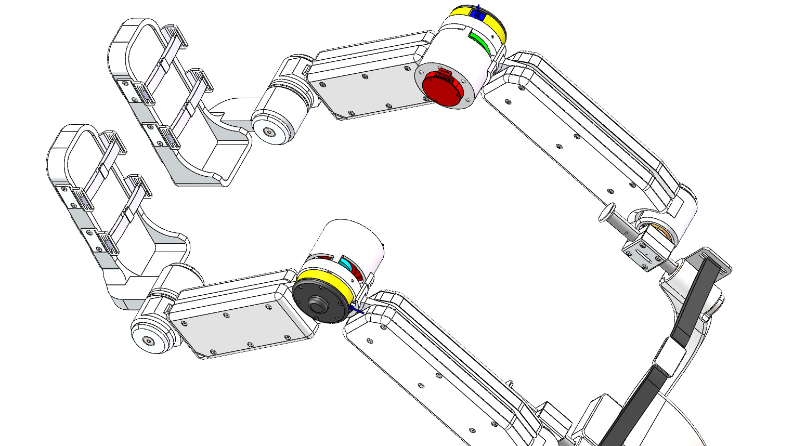
- Period
- Dec 2025 – May 2026
- My role
- Joint drive design & mechanical analysis
- Validation
- CAD, FEA & dynamic simulation
The project
An integrated knee-joint drive unit for a bionic lower-limb exoskeleton. The design combines the motor, planetary transmission and supporting structure into a compact assembly, balancing torque requirements with packaging and mechanical performance.
My contribution
- Worked on motor selection and gearbox design for the integrated joint drive.
- Developed the mechanical assembly and examined how the drive components fit within the knee-joint module.
- Performed structural and performance analysis using ANSYS Workbench and MSC Adams.
Engineering approach
Select the drive components
Consider torque, speed, power and integration constraints when selecting the motor and reduction system.
Integrate the joint
Model the motor, planetary gears and structural components as a compact assembly. Use exploded and sectional views to examine the internal arrangement.
Evaluate structural response
Study stress, strain and deformation under modeled loading conditions, including the documented 21 Nm and 55 Nm load cases.
Study transmission dynamics
Inspect motor torque, output angular velocity, gear-mesh forces and transmission error in MSC Adams.
Results & validation
The project produced a mechanical design supported by CAD assembly views, finite-element results and transmission dynamics plots.
Validation is based on CAD, finite-element analysis and transmission simulation. The gallery documents the modeled load cases and mechanical responses.
Project gallery
Original project figures. Select an image to view it at full size.
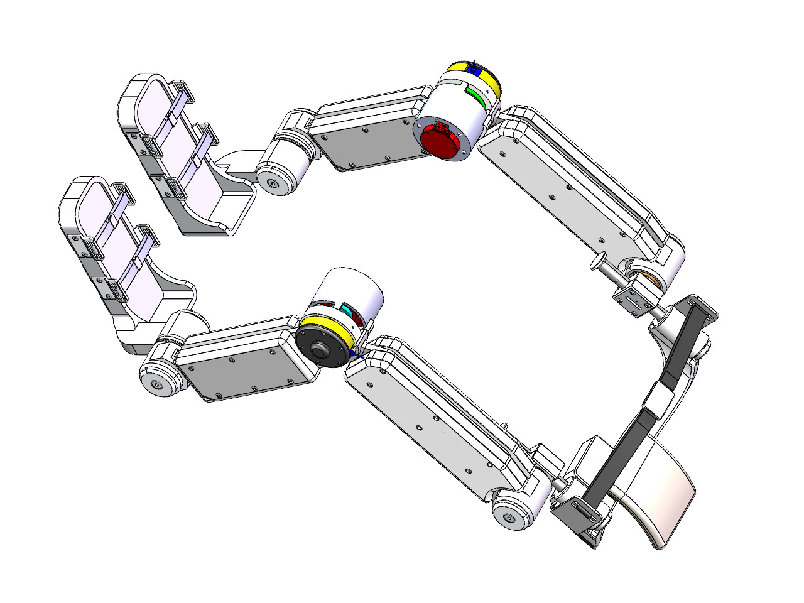
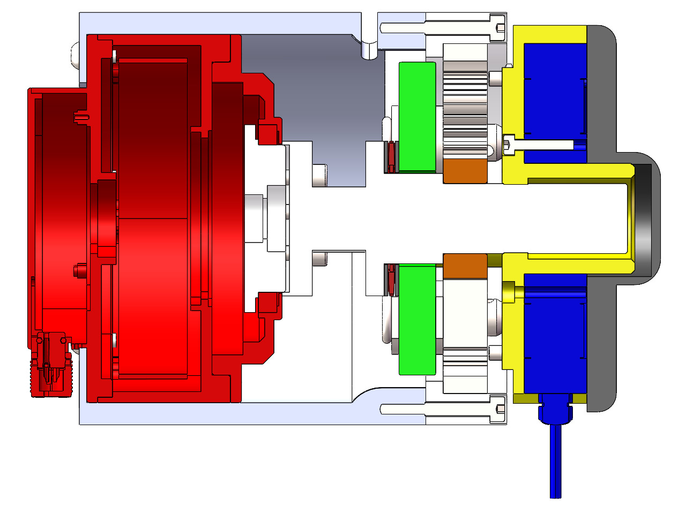
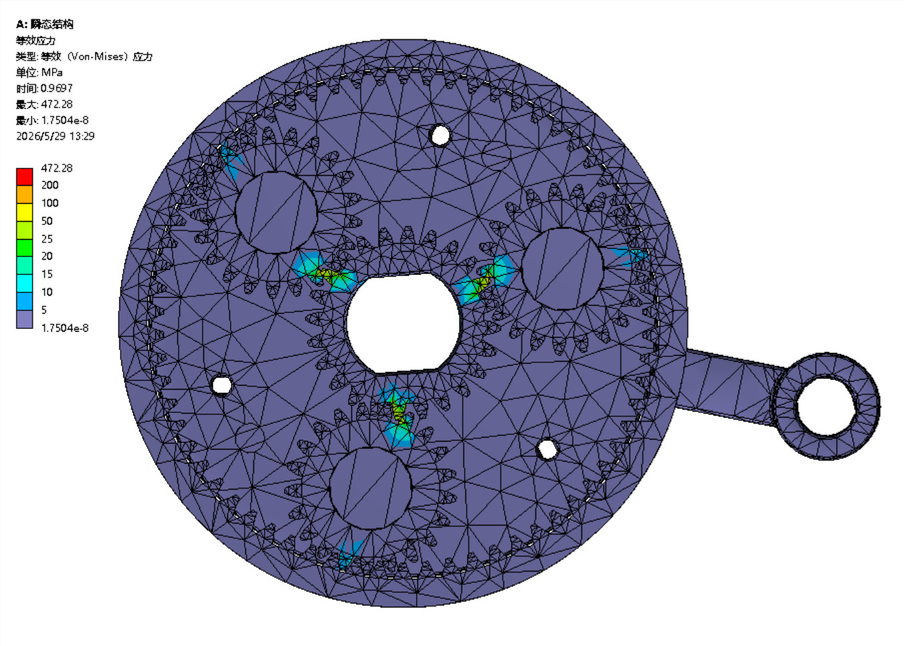
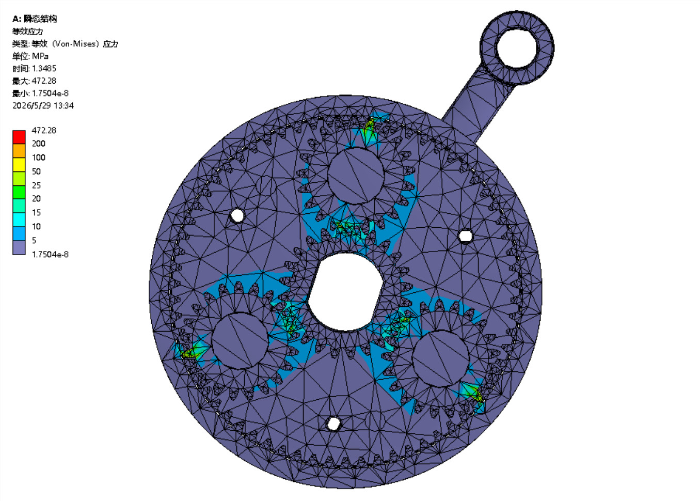
Explore additional CAD and simulation figures
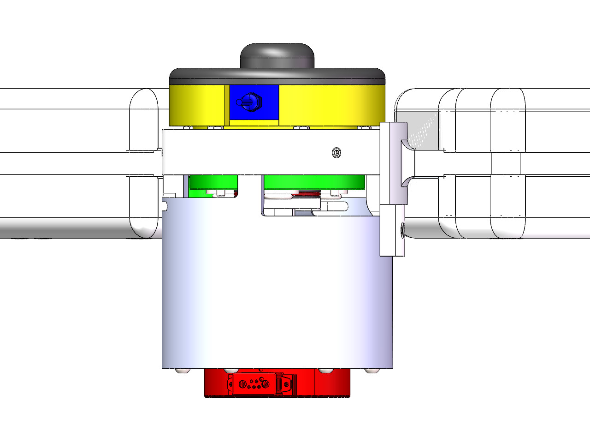
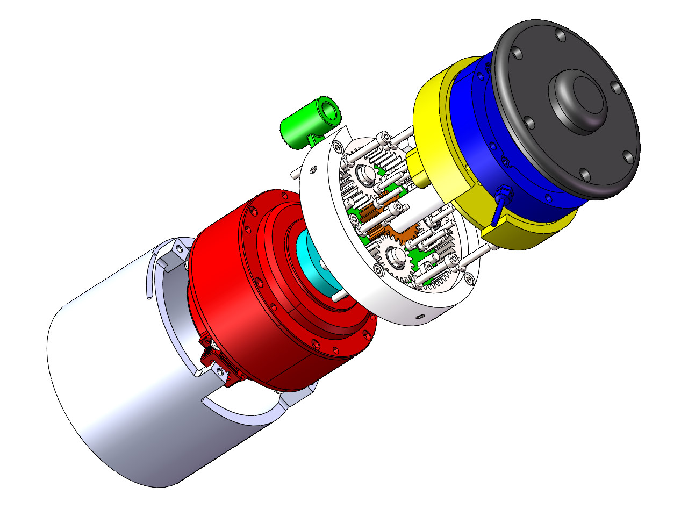
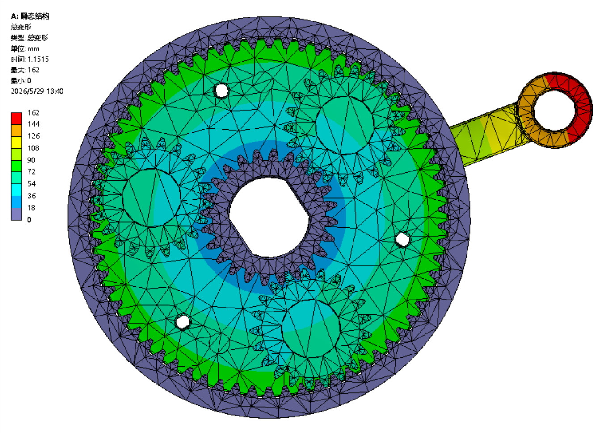
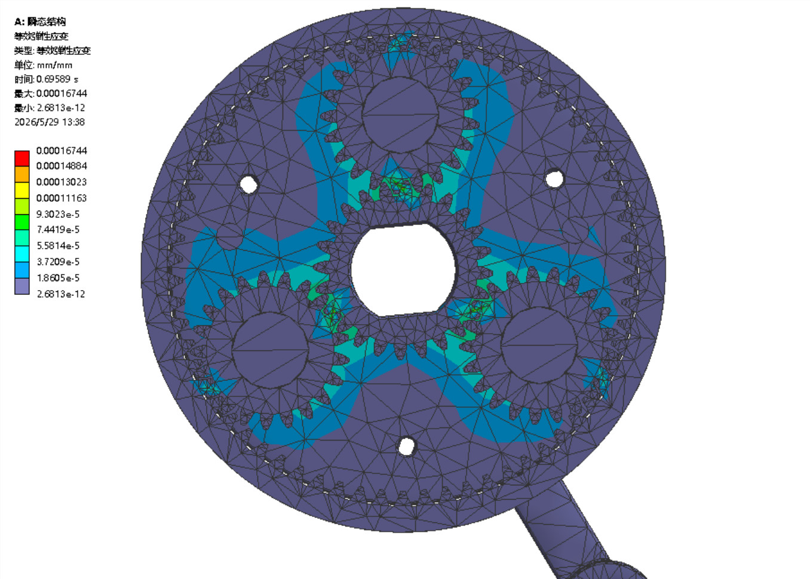
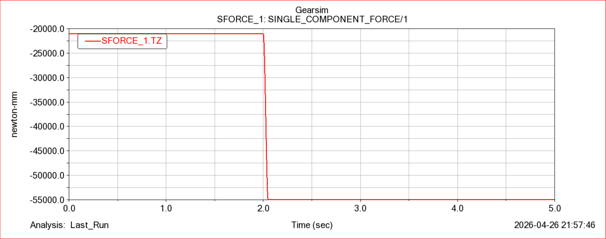
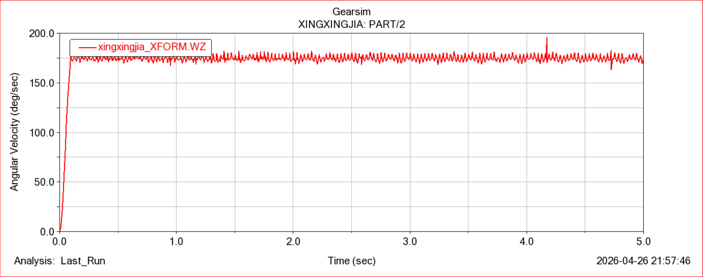
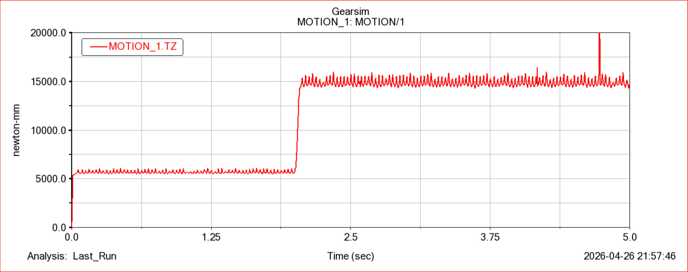
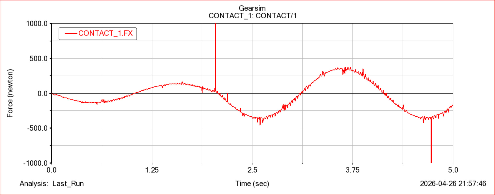
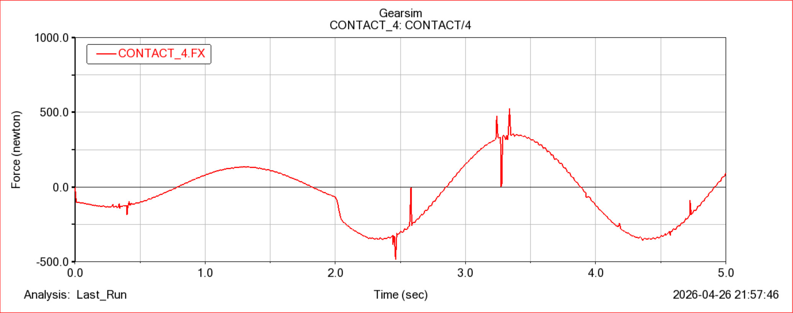
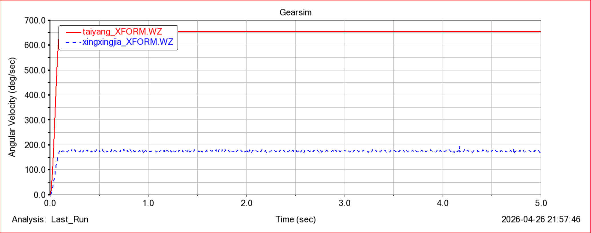
Source & tools
Explore the project files, technical documentation and supporting materials.